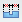

Arrange Dimensions command bar
Sets options for automatically arranging dimensions with the Arrange Dimensions  command. Some options are available only after a dimension is selected.
command. Some options are available only after a dimension is selected.
- Stack Pitch
-
Sets the distance between stacked dimensions. The value is a ratio of the dimension text size which is set in the Dimension Property dialog box.
Note:The stack pitch defines the distance between the dimension lines in a stacked dimension group. To set the distance between the innermost dimension line in the stack and the dimensioned geometry, use the Initial stack distance option on the Lines and Coordinate tab in the Dimension Style dialog box.
- Create Alignment Set
-
Makes management of dimensions easier by grouping the selected dimensions as either stacked or chained based on their dimension type. Create Alignment Set is turned on by default.
-
To automatically arrange and move the selected dimensions as a group, create an alignment set.
-
To automatically arrange and move the selected dimensions individually instead of as a group, turn off Create Alignment Set.
-
- Accept
-
Accepts the selection. This option is available only after a dimension is selected.
- Deselect
-
Clears the selection. This option is available only after a dimension is selected.
Create Alignment Set, regardless of state, overrides previously created alignment sets such as those created by the Maintain Alignment Set command

.